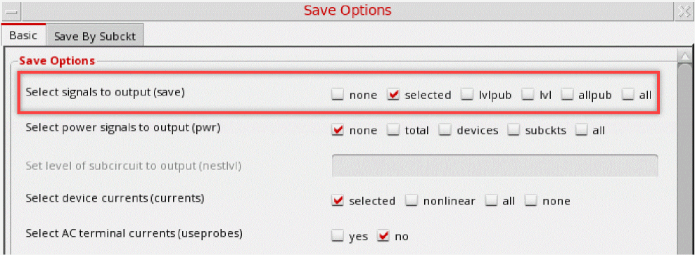
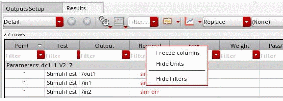

C
Environment Variables
This appendix describes public environment variables that control the characteristics of the Virtuoso ADE Explorer. You can customize the operation and behavior of ADE Explorer by changing the value of a particular environment variable.
This appendix lists the environment variables in the following areas:
- Simulation Environment
- adexl.monte
- AMS
- ams.emirOpts
- ams.envOpts
- HspiceD
- maestro.explorer
- maestro.cpupdtr
- maestro.distribute
- maestro.gui
- maestro.license
- maestro.plotting
- maestro.setupdb
- maestro.simulation
- maestro.stimuli
- maestro.stimuliTool
- maestro.test
- maestro.variables
- maestro.window
- Spectre
- Spectre.emirOpts
- Spectre.tran
- Spectre X
- spectreVerilog
- Ultrasim
- Real Time Tuning Environment Variables
- Environment Variables
Simulation Environment
- adeMaestroCheckoutOrder
- allowAdePanicStateSaving
- allowInvalidObjectSelection
- artistPlottingMode
- autoPlot
- checkInstanceBindings
- createCDFdata
- createComponentName
- createNamePrefix
- createNetlistProc
- createOceanScriptBeforeSimulation
- defaultHierSave
- directPlotPlottingMode
- displayPointNeltlistTimeStamp
- doNotOverwriteVarValuesWhileCopyingFromCV
- drlBufferMemory
- findVariablesSkip
- ignoreSchModified
- immediatePlot
- immediatePrint
- keepShellVarsInModelLibPath
- useHierarchicalSelection
- inductorDevicesNames
- obsoleteWarnings
- oceanScriptFile
- outputsImportExportVersion
- postSaveOceanScript
- preferTermOrderOverPinOrder
- preSaveOceanScript
- projectDir
- retainStateSettings
- saveDefaultsToOCEAN
- shortInstanceList
- showConvertNotifyDialog
- simulationDate
- simulator
- strictCDFparseAsNumber
- tryNFSSync
- tryNFSSyncLocal
- useDisplayDrf
- variables
- ignorePrintNettype
- skipModelSectionsRetrieval
adexl.monte
- additionalNetlistOptions
- applySaveOptionsToNetlist
- createStatisticalCornerType
- enableMonteCarloOverStatisticalCorners
- incrementalUpdate
- iterationUpdates
- minGroupSizeSplitAcrossIdleJobs
- numberOfPointsToview
- samplingMethod
- savedatainseparatedir
- saveProcessOptionDefaultValue
- saveSimulationData
additionalNetlistOptions
adexl.monte additionalNetlistOptions stringany_string
Description
Specifies the additional analysis options to be generated in the netlist.
GUI Equivalent
Examples
envGetVal("adexl.monte" "additionalNetlistOptions")
envSetVal("adexl.monte" "additionalNetlistOptions" 'string "nullmfactorcorrelation=yes")
applySaveOptionsToNetlist
adexl.monte applySaveOptionsToNetlist boolean { t | nil }
Description
Controls the writing of process and mismatch parameter information in the netlist. The valid values are:
-
t: Applies thesaveprocessparamsandsavemismatchparamsoptions in the netlist depending on the settings for the Save Process Data and Save Mismatch Data check boxes in the Monte Carlo form.
For example, if the Save Process Data and Save Mismatch Data check boxes are not selected in the Monte Carlo form, thesaveprocessparamsandsavemismatchparamsoptions are set tonoin the netlist and Spectre will not write process and mismatch parameter information to the disk.
For more information about thesaveprocessparamsandsavemismatchparamsoptions, see the Spectre Circuit Simulator Reference. -
nil: Writes process and mismatch parameter information in the netlist.
Whennil, the settings for the Save Process Data and Save Mismatch Data check boxes in the Monte Carlo form are not passed to the netlist.
Examples
envGetVal("adexl.monte" "additionalNetlistOptions")
envSetVal("adexl.monte" "additionalNetlistOptions" 'boolean t)
envSetVal("adexl.monte" "additionalNetlistOptions" 'boolean nil)
createStatisticalCornerType
adexl.monte createStatisticalCornerType cyclic{ sequence| value | prompt | promptValues |auto}
Description
Controls the writing of process and mismatch parameter information in the netlist.It has the following valid values:
-
sequece: Create a statistical corner by using a sequence ID of a sample. -
value: Create a statistical corner by using the statistical parameter values of a sample. -
prompt: Displays the Create Statistical Corner form in which you can confirm which one of the two types mentioned above is to be used to create a statistical corner. The default choice selected in the form is to create the sequence ID-based corner. -
promptValues: Displays the Create Statistical Corner form in which you can confirm which one of the two types mentioned above is to be used to create a statistical corner. The default choice selected in the form is to create the statistical parameter-based corner. -
auto: Automatically creates a statistical corner after completion of simulation using the statistical parameter values of an appropriate sample generated by Spectre. The selected sample varies depending on the Monte Carlo method used for running simulation.
Examples
envGetVal("adexl.monte" "createStatisticalCornerType")
envSetVal("adexl.monte" "createStatisticalCornerType" 'cyclic "auto")
envSetVal("adexl.monte" "createStatisticalCornerType" 'cyclic "sequence")
envSetVal("adexl.monte" "createStatisticalCornerType" 'cyclic "value")
envSetVal("adexl.monte" "createStatisticalCornerType" 'cyclic "prompt")
envSetVal("adexl.monte" "createStatisticalCornerType" 'cyclic "promptValues")
enableMonteCarloOverStatisticalCorners
adexl.monte enableMonteCarloOverStatisticalCorners boolean{ t| nil}
Description
Enables you to run Monte Carlo analysis (mismatch variation) over parameter-based statistical corners, consisting of process variation. It can have the following values:
-
t: Monte Carlo analysis can be run over parameter-based statistical corners. -
nil: Monte Carlo analysis cannot be run with statistical corners.
Examples
envGetVal("adexl.monte" "enableMonteCarloOverStatisticalCorners")
envSetVal("adexl.monte" "enableMonteCarloOverStatisticalCorners" 'boolean nil)
envSetVal("adexl.monte" "enableMonteCarloOverStatisticalCorners" 'boolean t)
incrementalUpdate
adexl.monte incrementalUpdate boolean{ t| nil}
Description
Controls the update of Monte Carlo simulation results in the Results tab of the Outputs pane. It can have the following values:
-
t: Monte Carlo simulation results are updated after each iteration of the Monte Carlo run.Use the iterationUpdates environment variable to specify the number of iterations of the Monte Carlo run after which the simulation results are updated in the Results tab of the Outputs pane. -
nil: Monte Carlo simulation results are displayed only after all iterations of the Monte Carlo run are over.
Examples
envGetVal("adexl.monte" "incrementalUpdate")
envSetVal("adexl.monte" "incrementalUpdate" 'boolean t)
envSetVal("adexl.monte" "incrementalUpdate" 'boolean nil)
iterationUpdates
adexl.monte iterationUpdates int integer
Description
Controls the number of iterations of the Monte Carlo run after which simulation results are updated in the Results tab of the Outputs pane.
Examples
envGetVal("adexl.monte" "iterationUpdates")
envSetVal("adexl.monte" "iterationUpdates" 'int 10)
envSetVal("adexl.monte" "iterationUpdates" 'int 20)
minGroupSizeSplitAcrossIdleJobs
adexl.monte minGroupSizeSplitAcrossIdleJobs int integer
Description
Specifies the minimum group size to be considered while splitting or distributing the Monte Carlo simulation points to the available idle jobs. By default, the points are not reallocated after an initial assignment to jobs. However, if there are multiple jobs, you can set this variable to a value greater than 1 to enable reallocation of points. In this case, ADE XL identifies the busy or idle jobs, and if the number of pending points on a busy job is more than the specified group size, it reallocates some of the points to the idle jobs, thereby helping in optimum utilization of the available resources.
For example, if a Monte Carlo simulation has 100 points and the Max Jobs field on the Job Policy Setup form is set to 2, a set of 50 simulation points are allocated to each one of job1 and job2. If the simulations running on job1 are completed faster than those running on job2, job1 becomes idle. If you have specified the minimum size for a group of simulations to be considered for the reallocation of points to 5 and the number of points pending with job2 is greater than 5, some of the points are reallocated to job1. This can improve the overall run time for Monte Carlo simulations.
Examples
envGetVal("adexl.monte" "minGroupSizeSplitAcrossIdleJobs")
envSetVal("adexl.monte" "minGroupSizeSplitAcrossIdleJobs" 'int 0)
envSetVal("adexl.monte" "minGroupSizeSplitAcrossIdleJobs" 'int 5)
numberOfPointsToview
adexl.monte numberOfPointsToView int integer
Description
Specifies the number of points to be displayed in the Detail results view for the Monte Carlo Sampling run mode. By default, the Detail view shows all the points of a Monte Carlo run. By setting this variable, you can choose to view only a selected number of worst points.
Examples
envGetVal("adexl.monte" "numberOfPointsToView")
envSetVal("adexl.monte" "numberOfPointsToView" 'int 0)
envSetVal("adexl.monte" "numberOfPointsToView" 'int 5)
samplingMethod
adexl.monte samplingMethod string lds
Description
Sets the default sampling method for the Monte Carlo Sampling run mode. The valid values are:
Examples
envGetVal("adexl.monte" "samplingMethod")
envSetVal("adexl.monte" "samplingMethod" 'string "lds")
envSetVal("adexl.monte" "samplingMethod" 'string "random")
envSetVal("adexl.monte" "samplingMethod" 'string "lhs")
savedatainseparatedir
adexl.monte savedatainseparatedir boolean{ t| nil}
Description
Allows saving of raw data (psf files) for every Monte Carlo iteration in a separate directory so that you can perform post processing operations (like plotting, printing, annotation, re-evaluation, and so on) on individual iterations.
-
t: Saves raw data (psffiles) for every Monte Carlo iteration in a separate directory. For example, if there are three iterations, the data for the iterations are saved in directories named1,2and3in the libraryName/cellName/adexl/results/data/<history_item>directory. -
nil: Disables the saving of raw data (psffiles) for every Monte Carlo iteration in a separate directory.
Examples
envGetVal("adexl.monte" "savedatainseparatedir")
envSetVal("adexl.monte" "savedatainseparatedir" 'boolean t)
envSetVal("adexl.monte" "savedatainseparatedir" 'boolean nil)
saveProcessOptionDefaultValue
adexl.monte saveProcessOptionDefaultValue boolean{ t| nil}
Description
Controls the default setting for the Save Process Data check box in the
-
t: The Save Process Data check box in the Monte Carlo form is selected by default (if the settings for this option is not there in the ADE XL setup database). -
nil: The Save Process Data check box in the Monte Carlo form is deselected by default (if the settings for this option is not there in the ADE XL setup database).
Examples
envGetVal("adexl.monte" "saveProcessOptionDefaultValue")
envSetVal("adexl.monte" "saveProcessOptionDefaultValue" 'boolean t)
envSetVal("adexl.monte" "saveProcessOptionDefaultValue" 'boolean nil)
saveSimulationData
adexl.monte saveSimulationData boolean{ t| nil}
Description
Specifies if the simulation data is to be saved so that it can be used for plotting. This environment variable sets the default value of the Save Data To Allow Family Plots check box in the
-
t: The Save Data To Allow Family Plots check box in the Monte Carlo form is selected by default. -
nil: The Save Data To Allow Family Plots check box in the Monte Carlo form is deselected by default.
Examples
envGetVal("adexl.monte" "saveSimulationData")
envSetVal("adexl.monte" "saveSimulationData" 'boolean nil)
envSetVal("adexl.monte" "saveSimulationData" 'boolean t)
AMS
- AMS_IGNORE_IGNORE
- amsIEsList
- hnlVerilogIgnoreTermNameList
- autoConfigNameForConfigCreation
- stopListForConfigCreation
- constraintListForConfigCreation
- dresolution
- finalTimeOp
- infoOptions
- paramRangeCheckFile
- disableCompileVAAsVAMS
- disallowRedefinition
- defaultVsupForVAR
- enablePkgImport
ams.emirOpts
The following table lists the environment variables in the ams.emirOpts partition. These variables work exactly same as the variables in the spectre.emirOpts partition.
ams.envOpts
amsIEsList
Specifies the default IE cards and the values of related fields to be loaded in the Interface Element (IE) Setup form when Interface Element/IE-card Based Setup is selected. Multiple IE cards can be added to the IE Card table using this variable. The same IE cards and field values are loaded in the form when you click the Reset all IE Parameters to Default Values button on the form.
To set this variable in the .cdsinit file or CIW, use the call:envSetVal("ams.envOpts" "amsIEsList" 'string "((t \"global\" \"\" \"Value\" \"1.8\" \"connectLib.CR_full_fast\" \"\" \"logic\" \"discipline=logic;nox=1;\" \"Built-in\") (t \"inst\" \"/I3\" \"Value\" \"2.8\" \"connectLib.CR_full_fast\" \"\" \"\" \"inst=\\\"/I3\\\";\" \"Built-in\"))")
autoConfigNameForConfigCreation
Specifies the default configuration name to be used while creating a config cellview automatically by choosing Configuration – Auto Create Configuration from Virtuoso Schematic Editor or Virtuoso Text Editor.
To set this variable in the .cdsinit file or CIW, use the call:envSetVal("ams.envOpts" "autoConfigNameForConfigCreation" 'string "auto_config")
To set this variable in the .cdsenv file, use the call:ams.envOpts autoConfigNameForConfigCreation 'string "auto_config"
connectRulesList
Sets the default set of connect rules. To set this variable in the .cdsinit file, use the call:
envSetVal("ams.envOpts" "connectRulesList" 'string "connectLib;ConnRules_18V_full;connect connectLib;mixedsignal;connect")
This variable will set two connect rules connectLib/ConnRules_18V_full and connectLib/mixed-signal as the default connect rules in the Connect Rules form.
To set a single connect rule, use the following call:
envSetVal("ams.envOpts" "connectRulesList" 'string "connectLib;ConnRules_5V_full;connect")
constraintListForConfigCreation
Specifies the default constraint list to be used while creating a config cellview using Virtuoso Schematic Editor or Virtuoso Text Editor. The same constraint list is used when the config cellview is created automatically. It is also displayed in the Constraint List field on the Setup Configuration form.
A constraint list specifies the constraints that apply to the design.
To set this variable in the .cdsinit file or CIW, use the call:
envSetVal("ams.envOpts" "constraintListForConfigCreation" 'string "")
To set this variable in the .cdsenv file, use the call:
ams.envOpts constraintListForConfigCreation 'string ""
defaultVsupForVAR
Changes the default value of variable defined in Supply value/Net. If the value set in the defaultVsupForVAR changes, the value of variable to be defined in the Supply value/Net field also changes accordingly.
For example, If the variable set in Supply value/Net is VAR(VDD) has its value 1.8, based on the value set for defaultVsupForVAR. If the value of defaultVsupForVAR is updated, then the value in VAR(VDD) is not affected, but the value of next variable that the user sets in Supply Value/Net is updated.
To set this variable in the .cdsinit file or CIW, use the call:envSetVal("ams.envOpts" "defaultVsupForVAR" 'string "2.5")
disableCompileVAAsVAMS
Controls whether the Compile VerilogA as Verilog-AMS field is displayed in thet, the field is hidden in the form.
To set this variable in the .cdsinit file or CIW, use the call:envSetVal( "ams.envOpts" "disableCompileVAAsVAMS" 'boolean t)
To set this variable in the .cdsenv, use the following:ams.envOpts disableCompileVAAsVAMS boolean t
disableRunModeInDP
When the host mode is distributed processing, setting the value to t disables the interactive simulation mode and sets batch simulation mode as default for distributed processing. Setting the value to nil will keep both interactive and batch simulation mode active for any host mode.
To set this variable in the .cdsinit file or CIW, use the call: envSetVal("ams.envOpts" "disableRunModeInDP" 'boolean t)
To set it in the .cdsenv file, add: ams.envOpts disableRunModeInDP 'boolean t
filesOnIrunCmdLineHDL
This variable is used to specify the files passed to AMS simulator without any options.
To set this variable in the .cdsenv file, add the lineams.envOpts filesOnIrunCmdLineHDL string "((t \"yyy.vams\") (t \"zzz.vams\"))"
To set this variable in the .cdsinit file or CIW, use the call:envSetVal("ams.envOpts" "filesOnIrunCmdLineHDL" 'string "((t \"yyy.vams\") (t \"zzz.vams\"))")
ipAddIpLabelAsPrefix
If set to t, this variable adds the specified IP Label is added as the prefix to the Virtuoso library name.
To set this variable in the .cdsinit file or CIW, use the following call:envSetVal("ams.envOpts" "ipAddIpLabelAsPrefix" 'boolean nil)
To set this variable in the .cdsenv file, use the following call:ams.envOpts ipAddIpLabelAsPrefix boolean nil
|
AMS IP Export – SystemVerilog Configuration File – Add IP Label to Virtuoso Library Name as Prefix |
ipExportHDLFiles
If set to t, this variable copies the HDL files to the specified IP Export directory path.
To set this variable in the .cdsinit file or CIW, use the following call:envSetVal( "ams.envOpts" "ipExportHDLFiles" 'boolean nil)
To set this variable in the .cdsenv file, use the following call:ams.envOpts ipExportHDLFiles boolean nil
irunIncDirHDL
Specifies a directory to search for the 'include files.
To set this variable in the .cdsinit file or CIW, use the following call:envSetVal( "ams.envOpts" "irunIncDirHDL" 'string "((t \"/path/include_files/\") (t \".\") )")
To set this variable in the .cdsenv file, use the following call:ams.envOpts irunIncDirHDL string "((t \"/path/include_files/\") (t \".\") )"
|
Virtuoso Analog Design Environment – Simulation – Options – AMS Option – Include Option Settings |
libDirsHDL
Specifies the path to the directory containing the library to be used by AMS simulator.
To set this variable in the .cdsinit file or CIW, use the following call:envSetVal( "ams.envOpts" "libDirsHDL" 'string "((t \"/path/src_files\") (t )")
To set this variable in the .cdsenv file, use the following call:ams.envOpts libDirsHDL string ""((t \"/path/src_files\") (t )"
|
Virtuoso Analog Design Environment – Simulation – Options – AMS Option – Include Option Settings |
libFilesHDL
Specifies the name of the file in the library to be used by AMS simulator.
To set this variable in the .cdsinit file or CIW, use the following call:envSetVal( "ams.envOpts" "libFilesHDL" 'string "((t \"module1.vams\") (nil \"/path1/module2.vams\"))")
To set this variable in the .cdsenv file, use the following call:ams.envOpts libFilesHDL string "((t \"module1.vams\") (nil \"/path1/module2.vams\"))"
|
Virtuoso Analog Design Environment – Simulation – Options – AMS Option – Include Option Settings |
libraryListForConfigCreation
Customizes the list of libraries in .cdsinit and SKILL programming in CIW. It sets the default global bindings when you set up a configuration or edit an existing configuration using Setup Configuration form or directly by Auto Create Configuration.
To set this variable in the .cdsinit file or CIW, use the following call:envSetVal("ams.envOpts" "libraryListForConfigCreation" 'string "Lib1 Lib2")
|
A single library name, example, |
|
|
Virtuoso Hierarchy Editor Editing– Global Bindings – Library List |
maxNumSnapShots
Specifies the maximum number of snapshots to be saved during the specified period for the periodic snapshots.
To set this environment variable in the .cdsinit file or CIW, use the following call:envSetVal("ams.envOpts" "maxNumSnapShots" 'int 4)
To set this environment variable in the .cdsenv file, use the following call:ams.envOpts maxNumSnapShots int 4
|
Simulation – Netlist and Run Options – SAVE AND RESTART OPTIONS – Periodic snapshot – Max number |
optsFileHDL
Specifies the command-line arguments contained in the arguments file for AMS simulator.
To set this variable in the .cdsinit file or CIW, use the following call:envSetVal("ams.envOpts" "optsFileHDL" 'string "((t \"opt.f\"))")
To set this variable in the .cdsenv file, use the following call:ams.envOpts optsFileHDL 'string "((t \"opt.f\"))"
|
Virtuoso Analog Design Environment – Simulation – Options – AMS Option – Include Option Settings |
saveAllSnapShots
Specifies whether to save all snapshots taken during the time window specified for periodic snapshots.
To set this environment variable in the .cdsinit file or CIW, use the following call:envSetVal("ams.envOpts" "saveAllSnapShots" 'boolean nil)
To set this environment variable in the .cdsenv file, use the following call:ams.envOpts saveAllSnapShots boolean nil
|
Simulation – Netlist and Run Options – SAVE AND RESTART OPTIONS – Periodic snapshot – Save all snapshots |
snapShotBaseName
Specifies the base name of the snapshot.The base name must be alphanumeric with no spaces or special characters.
To set this environment variable in the .cdsinit file or CIW, use the following call:envSetVal("ams.envOpts" "snapShotBaseName" 'string "mySnapShot")
To set this environment variable in the .cdsenv file, use the following call:ams.envOpts snapShotBaseName string "mySnapShot"
|
An alphanumeric string with no spaces or special characters. |
|
|
Simulation – Netlist and Run Options – SAVE AND RESTART OPTIONS – Snapshot base name |
snapShotNameTimeUnit
Specifies the time unit to be used in the snapshot name.
For example, if you specify the Strobe time(s) as 20n, and the Snapshot name time unit as us, a snapshot named mySnapShot_20n_us_run1 is saved.
To set this environment variable in the .cdsinit file or CIW, use the following call:envSetVal("ams.envOpts" "snapShotNameTimeUnit" 'string "us")
To set this environment variable in the .cdsenv file, use the following call:ams.envOpts snapShotNameTimeUnit string "us"
|
Simulation – Netlist and Run Options – SAVE AND RESTART OPTIONS – Snapshot time unit |
snapShotSaveMode
Specifies the mode for saving the snapshots. The two modes are Time points and Periodic snapshot.
To set this environment variable in the .cdsinit file or CIW, use the following call:envSetVal("ams.envOpts" "snapShotSaveMode" 'string "Time points")
To set this environment variable in the .cdsenv file, use the following call:ams.envOpts snapShotSaveMode string "Time points"
|
Simulation – Netlist and Run Options – SAVE AND RESTART OPTIONS – Save snapshot |
stopListForConfigCreation
Specifies the default stop list to be used while creating a config cellview using Virtuoso Schematic Editor or Virtuoso Text Editor. The same stop list is used when the config cellview is created automatically. It is also displayed in the Stop List field on the Setup Configuration form.
A stop list is a list of views that are to be treated as leaf nodes, that is, not to be expanded.
To set this variable in the .cdsinit file or CIW, use the call: envSetVal("ams.envOpts" "stopListForConfigCreation" 'string "spectre")
To set it in the .cdsenv file, add: ams.envOpts stopListForConfigCreation 'string "spectre"
strobeTime
Specifies the time interval between saving snapshots, followed by the time unit.
To set this environment variable in the .cdsinit file or CIW, use the following call:envSetVal("ams.envOpts" "strobeTime" 'string "")
To set this environment variable in the .cdsenv file, use the following call:ams.envOpts strobeTime string ""
|
Any integer value greater than 0, followed by the time unit. |
|
|
Simulation – Netlist and Run Options – SAVE AND RESTART OPTIONS – Strobe time(s) |
useIeSetup
If this variable is set to t, the Interface Element/IE-card based setup is selected for AMS simulation. By default, the Connect Rule/Connect Module based setup is selected for AMS simulation.
After setting this variable to t, when you open the Interface Element (IE) setup form, the Interface Element/IE-card Based Setup(OSS/UNL) radio button is selected and the additional options required for the Interface Element/IE-card based setup are displayed in the form. Also, when you netlist the design while the Interface Element/IE-card based setup is selected, an ie_card.scs file is placed in the netlist directory.
The ie_card.scs file contains information about how the connect rules are used during simulation.
To set this variable in the .cdsenv file, use the call:
ams.envOpts useIeSetupboolean t
To set this variable in the .cdsinit file or CIW, use the call:envSetVal("ams.envOpts" "useIeSetup" 'boolean t)
viewListForConfigCreation
Specifies the default view list to be used while creating a config cellview using Virtuoso Schematic Editor or Virtuoso Text Editor. The same view list is used when the config cellview is created automatically. It is also displayed in the View List field on the Setup Configuration form.
A view list specifies the views to be added in your configuration. It applies to every level of the configuration and determines which view is selected for each object in the design, unless overridden by a cell or instance binding. You can use the asterisk character (*) as a wildcard in the view list.
To set this variable in the .cdsinit file or CIW, use the call: envSetVal("ams.envOpts" "viewListForConfigCreation" 'string "spectre spice pspice verilog verilogams behavioral functional systemVerilog schematic veriloga vhdl vhdlams wreal")
To set it in the .cdsenv file, add: ams.envOpts viewListForConfigCreation 'string "spectre spice pspice verilog verilogams behavioral functional systemVerilog schematic veriloga vhdl vhdlams wreal"
|
|
|
switchViewList
Specifies the default view list. It is a list of the views for ADE to switch when searching for design variables and when netlisting. The same view list is displayed in the Switch View List field on the Environment Options form.
To set this variable in the .cdsinit file or CIW, use the call:envSetVal("spectre.envOpts" "switchViewList" 'string "schematic spectre")
To set this variable in the .cdsenv file, use the call:spectre.envOpts switchViewList 'string "schematic spectre"
|
Virtuoso Analog Design Environment – |
HspiceD
- hspiceMaxLineLength
- hspiceSoftLineLength
- mapGndNetToZero
- netlistModelFileFirst
- setTopLevelAsSubckt
- userCmdLineOption
maestro.explorer
defaultOutputColumns
Specifies the default list of columns to be shown on the Outputs Setup tab in ADE Explorer.
To set this variable in the .cdsenv:
maestro.explorer defaultOutputColumns 'string "\"Name\" \"Type\" \"Details\" \"Value\" \"Plot\" \"Save\" \"Spec\"
envSetVal( "maestro.explorer" "defaultOutputColumns" 'string "\"Name\" \"Type\" \"Details\" \"Value\" \"Plot\" \"Save\" \"Spec\"")
|
"\"Name\" \"Type\" \"Details\" \"Value\" \"Plot\" \"Save\" \"Spec\"" |
|
displayImplicitSignals
Controls whether to show or hide the implicit signals in ADE Explorer. While creating expressions in the Details field, if it uses a signal or net that does not already exist in the outputs table, a new row for an output of type Implicit is added to the table. For example, when you create an output expression, average("/net06")), an implicit output is created for signal /net06.
By default, implicit signals are not shown in the outputs table.
To set this variable in .cdsinit or CIW:
envSetVal("maestro.explorer" "displayImplicitSignals" 'boolean t)
outputSetupFilteringNumOutputThreshold
Sets the minimum limit after which filters start appearing on the columns in the Output Setup pane in ADE Explorer. When you set the value of this variable to 0, filters will always appear regardless of the number of output rows. On the other hand, if you set the value to a large number, say 99999, filters will never appear.
You can use these filters to search and filter results based on the specified text. For more information about how to perform filtering in Outputs Setup pane, see Filtering and Searching in Outputs Setup Pane.
To set this variable in the .cdsinit file or CIW:
envSetVal("maestro.explorer" "outputSetupFilteringNumOutputThreshold" 'int 20)
retainNetlistDirForSinglePoint
Determines whether the netlist directory is to be retained when the next simulation is a single-point run. When this variable is set to t (default value), the netlist directory is retained for the next simulation run. If set to nil, the netlist directory is deleted before the next simulation run starts.
To set this variable in the .cdsinit file or CIW:
envSetVal("maestro.explorer" "retainNetlistDirForSinglePoint" 'boolean t)
showSaveBySubcktAssistant
Controls the display of Save By Subckt Instances assistant in ADE Explorer. The default value of this variable is auto, which means this assistant is displayed only when the saved subcircuit information is available. When set to always, the Save By Subckt Instances assistant is always displayed in ADE Explorer and schematic. When set to never, this assistant is not displayed.
However, if you open Save By Subckt Instances assistant using the Outputs – To Be Saved – Select By Subckt Inst menu, it always appears regardless of the setting of this variable.
To set this variable in the .cdsinit file or CIW:
envSetVal("maestro.explorer" "showSaveBySubcktAssistant" ’cyclic "auto")
showWhatsNewWindow
Controls whether the What's New window should be displayed when ADE Explorer is opened for the first time. This window highlights the new features in ADE Explorer and is displayed only in those releases that include significant new features. If a release does not include a new feature, the What’s New window is not displayed regardless of the setting of this environment variable. In addition, the value of this environment variable is always in synchronization with the Do not show this again check box on the What’s New window.
For example, suppose you are using the IC6.1.7ISR3 or ICADV12.2ISR3 release and this window is enabled for these releases. Now, if you select the Do not show this again check box, this window will not appear next time when you open ADE Explorer in these releases. Also, the value of variable is automatically set to the specific release number. In this example, it is set to IC6.1.7-64b.500.3 or ICADV12.2-64b.500.3. Alternatively, to stop displaying the What’s New window for a specific release, instead of clicking the Do not show this again check box, you can also manually set the value of this variable to the specific release number.
Now, if you move to IC6.1.7ISR4 or ICADV12.2ISR4,
-
If the What’s New window is enabled, the value of this variable and the
Do not show this againcheck box are reset, and the What’s New Window is always displayed to highlight the new features. - If the What’s New window is not enabled, it will not be displayed.
To set this variable in the .cdsinit file or CIW:
envSetVal("maestro.explorer" "showWhatsNewWindow" 'string "yes")
maestro.cpupdtr
keepHistoryData
Specifies whether or not to copy the history of a maestro view while copying the tests in the view.
If you do not wish to copy the simulation results, it is recommended to also set the variable, copyResultsData in your .cdsenv file and set its value to nil.
keepHistoryData variable is used by both Virtuoso and a supporting utility. Therefore, it is recommended to set it in the ~/.cdsenv file that is read by both. If you set this variable in the <current-working-directory>/.cdsenv file, you must also set the CDS_LOAD_ENV variable in the UNIX environment to CSF. The variable is not used when specified in the .cdsinit file.To set this variable in .cdsenv:
maestro.cpupdtr keepHistoryData boolean t
maestro.distribute
spectreMTNumberUsed
Specifies the value of the +mt option for Spectre APS when on the High-Performance Simulation Options form, the Manual multi-threading mode option is selected for APS Spectre simulation performance.
To set this variable in the .cdsenv:
maestro.distribute spectreMTNumberUsed cyclic "Estimated"
envSetVal( "maestro.distribute" "spectreMTNumberUsed" 'cyclic "Estimated")
maestro.gui
confirmBeforeTestOrCornerDelete
Controls the display of the confirmation message that appears when you delete a test or a corner in the Setup assistant of ADE Explorer or in the Data View assistant of ADE Assembler. When this variable is set to t, the confirmation message appears every time you delete a test or a corner. When this variable is set to nil, which is the default value, the confirmation message will be disabled for the current Virtuoso session.
To set this variable in the .cdsinit file or CIW:
envSetVal("maestro.gui" "confirmBeforeTestOrCornerDelete" 'boolean nil)
nameDisplayWidthInDataView
Controls the width of the divider bar that appears on top of the Setup assistant. You can drag this bar to resize the width of the Name and Value columns.
This variable can be set to the following values:
-
Fixed—Divider bar is fixed. You cannot drag the bar to resize the column width. -
FitToColumn—Column width is automatically adjusted according to the length of the names or values in the columns. -
Interactive—Divider bar is moveable. You can drag the bar to change the column width. -
UseVariableNameWidth—At first, the column width is automatically adjusted according to the length of the names or values in the columns. Later, you can drag the bar to change the column width. For example, if a new variable is added and it is longer than the longest column name, then the slider will have to be manually adjusted to see the new column name.
To set this variable in the .cdsinit file or CIW:
envSetVal("maestro.gui" "nameDisplayWidthInDataView" 'cyclic "Interactive")
resultsFilteringColumnsList
Specifies the threshold number of rows after which the column filters are displayed on the Results tab of ADE Explorer and ADE Assembler. By default, the variable is set to 0. Therefore, the column filters are always displayed. Set this variable to a larger number to hide the filters for a small number of rows.
maestro.gui resultsFilteringColumnsList int 0
envSetVal( "maestro.gui" "resultsFilteringColumnsList" 'int 0)
|
The threshold number of rows after which column filters are displayed. |
|
showFilterInDataView
Determines whether to display filters on top of the Name and Value columns in the Setup assistant. When this variable is set to t, which is the default value, the filters are shown. When set to nil, the filters are hidden. You can use these filters to filter the column contents of the Setup assistant.
To set this variable in the .cdsinit file or CIW:
envSetVal("maestro.gui" "showFilterInDataView" 'boolean "t")
useExpressionBuilder
Determines whether to use the Expression Builder or the Calculator window to create output expressions in the ADE Outputs Setup pane. When this variable is set to t, the Expression Builder opens up when you create expressions. When it is set to nil, the Calculator window appears that you can use to build expressions.
To set this variable in the .cdsinit file or CIW:
envSetVal("maestro.gui" "useExpressionBuilder" ’boolean nil)
usePlottingTemplate
Controls the display of the Plotting Template drop-down list in ADE Explorer and ADE Assembler.
To set this variable in the .cdsinit file or CIW:
envSetVal("maestro.gui" "usePlottingTemplate" 'boolean t)
yieldViewMaxOutputsShowExpanded
Specifies the threshold value for the number of output rows that can be displayed in expanded form in the Yield results view. If the output rows exceed this threshold, the results are displayed in collapsed form.
To set this variable in the .cdsinit file or CIW:
envSetVal( "maestro.gui" "yieldViewMaxOutputsShowExpanded" 'int 20)
saveImplicitSignalsDuringRun
Ensures that the implicit signals are added to the save statement in the netlist during the simulation run in the following scenarios:
- The output expressions, containing implicit signals, were created using ADE Explorer or Assembler (IC6.1.8 ISR5 version or below). Simulation is not run using these expressions.
-
The Select signals to output (save) option on the Save options form is set to selected or allpub during the creation of an output expression.

To set this variable in .cdsinit or CIW:
envSetVal("maestro.gui" "saveImplicitSignalsDuringRun" 'boolean nil)
hideShowMultiProcess
Controls whether to show or hide the option, Multi-processing, in the General section of High-Performance Simulation Options form, when Simulation performance mode is set to Spectre X.
To set this variable in .cdsinit or CIW:
envSetVal("maestro.gui" "hideShowMultiProcess" 'boolean t)
showUnitsInResults
Controls whether to hide or show units, such as Hz or dB,in the measured results for the expressions in the Results tab.
To set this variable in the .cdsenv:
maestro.gui showUnitsInResults boolean t
envSetVal("maestro.gui" "showUnitsInResults" 'boolean t)
|
Right-click menu in the Results column header

|
textColorForSpecFailInResults
Specifies a text color, color name, or a color value in hexadecimal format, to be used for the Pass/Fail, Min, and Max columns for the result values that fail to meet the specification.
To set this variable in .cdsinit or CIW:
maestro.gui textColorForSpecFailInResults "colorName_or_hexadecimalValue"
envSetVal("maestro.gui" "textColorForSpecFailInResults" 'string "maroon")
Sets the color to be used for values that fail the spec results to maroon, as shown below.
Note that in this example, the Max value for output UGF was meeting the spec. Therefore, only the pass/fail status and the Min value are in the color specified by this env var.
textColorForSpecNearInResults
Specifies a text color, color name, or a color value in hexadecimal format, to be used for the Pass/Fail, Min, and Max columns for the result values that are near the specification.
To set this variable in .cdsinit or CIW:
maestro.gui textColorForSpecNearInResults "colorName_or_hexadecimalValue"
envSetVal("maestro.gui" "textColorForSpecNearInResults" 'string "#AC00CA")
Sets the color to be used for values that are near the specification to purple, as shown below.
textColorForSpecPassInResults
Specifies a text color, color name or a color value in hexadecimal format, to be used for the Pass/Fail, Min, and Max columns for the result values that meet the specification.
To set this variable in .cdsinit or CIW:
maestro.gui textColorForSpecPassInResults "colorName_or_hexadecimalValue"
envSetVal("maestro.gui" "textColorForSpecPassInResults" 'string "#00ACAC")
Sets the color to be used for values that pass the spec results to light blue, as shown below.
showNativeRelxpertSwitch
Enables you to switch between the Spectre Native and RelXpert modes.
t, a drop-down list is displayed on the Reliability Analysis Editor form, as shown in the following figure.Using this drop-down list, you can choose one of the following simulator modes:
To set this variable in the .cdsenv:
maestro.gui showUnitsInResults boolean nil
envSetVal("maestro.gui" "showNativeRelxpertSwitch" 'boolean nil)
showRedundantPointsinDT
Displays the redundant
To set this variable in the .cdsenv:
maestro.gui showRedundantPointsinDT boolean nil
envSetVal("maestro.gui" "showRedundantPointsinDT" 'boolean nil)
maestro.license
checkoutOrder
Controls the license checkout order to be followed for ADE Explorer and ADE Assembler. This variable has the following valid values:
-
Explorer_Assembler(default): When set, the ADE Explorer license is searched first. If it is not available, then Assembler license is searched and used. -
Assembler_Explorer: When set, the ADE Assembler license is searched first. If it is not available, then ADE Explorer license is searched and used. -
Explorer: When set, only ADE Explorer license is searched and used. -
Assembler: When set, only ADE Assembler license is searched and used
To set this variable in the .cdsinit file or CIW:
envSetVal("maestro.license" "checkoutOrder" 'cyclic "Explorer_Assembler")
maestro.setupdb
backUpOrigDataDuringAutomaticCleanUp
Specifies whether to back up the original data while converting old state files from ADE XL into XML format that is supported by ADE Explorer or ADE Assembler. This variable is used when the automaticallyCleanupScriptsAndTranslateHistoryStateFiles variable is set to t.
To set this variable in the .cdsenv:
maestro.setupdb backUpOrigDataDuringAutomaticCleanUp boolean t
envSetVal("maestro.setupdb" "backUpOrigDataDuringAutomaticCleanUp" 'boolean t)
maestro.plotting
showViVAGraphLaunchTip
Displays the tip providing information that you can open ViVA XL graph as an assistant or as a standalone window. This tip appears when the ViVA XL graph is opened as an assistant for the first time. Set this variable to nil to hide this tip.
To set this variable in the .cdsinit file or CIW:
envSetVal("maestro.plotting" "showViVAGraphLaunchTip" ’boolean "t")
maestro.simulation
interactiveE
Specifies whether the ICRPs need to submit points directly to a Spectre plugin. When a large number of sweep points or corners are used, this mode enhances the performance of a simulation run. This variable has the following valid values:
-
t—Each ICRP creates an initial netlist for the design and submits all the assigned points along with variable changes to a Spectre plugin. The plugin updates the netlist for each point by using the information about the variables. After the simulation for all the points is complete, Spectre plugin returns the results together for those points to the ICRP. This saves the overhead of Spectre startup, license checks, and netlisting separately for each point. -
nil—Each ICRP handles simulation for a single point at a time. For each point, it starts a new session with Spectre, checks out a license, creates a netlist, and runs simulation. After the simulation for a point is complete, Spectre returns the results to the ICRP and kills the session. This involves an overhead of repetitive tasks for each point, and impacts the performance when a simulation run involves a large number of sweep points and corners.
To set this variable in the .cdsinit file or CIW:
envSetVal("maestro.simulation" "interactiveE" 'boolean t)
interactiveRTT
Specifies whether the ICRPs need to submit points directly to a Spectre plugin when you are working in the real-time tuning mode. When a large number of sweep points or corners are used, this mode enhances the performance of a simulation run. This variable has the following valid values:
-
t—Each ICRP creates an initial netlist for the design and submits all the assigned points along with variable changes to a Spectre plugin. The plugin updates the netlist for each point by using the information about the variables. After the simulation for all the points is complete, Spectre plugin returns the results together for those points to the ICRP. This saves the overhead of Spectre startup, license checks, and netlisting separately for each point. -
nil—Each ICRP handles simulation for a single point at a time. For each point, it starts a new session with Spectre, checks out a license, creates a netlist, and runs simulation. After the simulation for a point is complete, Spectre returns the results to the ICRP and kills the session. This involves an overhead of repetitive tasks for each point, and impacts the performance when a simulation run involves a large number of sweep points and corners.
To set this variable in the .cdsinit file or CIW:
envSetVal("maestro.simulation" "interactiveRTT" 'boolean t)
groupRunE
Enables or disables group submission of points to the available ICRP jobs. This variable has the following valid values:
-
t— Enables group submission of points. ADE Explorer divides the points to be simulated into groups and submits those to the available ICRP jobs at a time. Instead of communicating with ADE Assembler for each point individually, an ICRP runs the simulation for all the points in the group together and returns the results for the group. This enhances the performance of the simulation run. -
nil— Disables group submission of points. ADE Explorer submits a single point to an ICRP at a time.
To set this variable in the .cdsinit file or CIW:
envSetVal("maestro.simulation" "groupRunE" 'boolean t)
minGroupSizeSplitAcrossIdleJobs
Specifies the minimum number of pending points (jobs) with an ICRP awaiting to be run. If the number of idle points are more than this count, they are redistributed to other available ICRPs. This helps in enhancing the overall performance of the simulation run when certain ICRPs are running on slow resources. Therefore, you can set this variable to a value greater than 1 to enable reallocation of points.
For example, If a simulation has 100 points and the Max Jobs field on the Job Policy Setup form is set to 2, a set of 50 simulation points are allocated to each one of job1 and job2. If the simulations running on job1 are completed faster than those running on job2, job1 become idle. If you have specified the minimum size for a group of simulations to be considered for the reallocation of points to 5 and the number of points pending with job2 is greater than 5, some of the points are reallocated to job1. This improves the overall run time for simulations.
t in ADE Explorer and when groupRunA is set to t in ADE Assembler.To set this variable in the .cdsinit file or CIW:
envSetVal( "maestro.simulation" "minGroupSizeSplitAcrossIdleJobs" 'int t)
checkSpectreStatus
Enables or disables checking of the status of Spectre processes running simulations. When this check is enabled, ADE Explorer or ADE Assembler periodically checks for the status of the Spectre processes. If a Spectre process is suspended because of the unavailability of resources, ADE Explorer or ADE Assembler also suspends the corresponding job connected to that process.
To set this variable in the .cdsinit file or CIW:
envSetVal("maestro.simulation" "checkSpectreStatus" 'boolean t)
maxRDBSyncWait
Specifies the maximum wait time (in seconds) for which ADE Explorer or ADE Assembler needs to wait for the results data to be used for the evaluation of calcVal expressions before reporting an evaluation error. ADE Assembler considers this variable only when the results for the corresponding point are not found in the results database when querying outputs for calcVal evaluation. This variable is particularly useful when the simulations are running over NFS and there could be a delay in retrieving the results
The wave comparison feature of ADE Assembler also uses calcVal internally. If the wave comparison results are not displayed correctly, you can use this variable to allow some time for data retireval before comparisons are done.
To set this variable in the .cdsenv:
maestro.simulation maxRDBSyncWait int 60
envSetVal( "maestro.simulation" "maxRDBSyncWait" 'int 60)
maestro.stimuli
maxStopTime
Specifies the max value of stop time for any new stimuli defined in the Stimuli Assignment form. It is used to prevent long simulations for waveform previews.
To set this variable in .cdsinit or CIW:
envSetVal("maestro.stimuli" "maxStopTime" 'string "1m")
maestro.stimuliTool
stopTime
Specifies the stop time for any new stimuli defined in the Stimuli Assignment form.
To set this variable in .cdsinit or CIW:
envSetVal("maestro.stimuliTool" "stopTime" 'string "1n")
isourceResistorValue
Specifies the resistance value of a resistor required to plot waveform from an isource component.
envSetVal( "maestro.stimuliTool" "isourceResistorValue" 'string "1k")
maestro.test
automaticallyCleanupScriptsAndTranslateHistoryStateFiles
Enables the removal of redundant files from the maestro cellview directory while opening the view in ADE Explorer or ADE Assembler. This helps in reducing the cellview size by converting old state files into XML format or by removing the unused file.
To set this variable in the .cdsinit file or CIW:
envSetVal( "maestro.test" "automaticallyCleanupScriptsAndTranslateHistoryStateFiles" " 'boolean t)
maestro.variables
autoSyncGlobalVarsToTestVars
Controls whether the value of global and local variables should be in synchronization when modified using ADE Explorer or Assembler.
When this variable is set to t, if you are working in ADE Assembler and change a global variable, then every test in ADE Assembler takes that global value to be the design value. If you change a design variable in Explorer and then go to ADE Assembler, then only the local value of design variable for that test is updated. While changing a variable value in ADE Explorer, the value of corresponding global variable is not updated; however, a yellow highlight appears on that global variable indicating that it has been overridden by the test-specific local value.
When this variable is set to nil, changing a global variable in ADE Assembler does not affect that variable in the tests. Similarly, changing a design variable in ADE Explorer changes the variable only for that test.
To set this variable in the .cdsinit file or CIW:
envSetVal("maestro.variables" "autoSyncGlobalVarsToTestVars" 'boolean t)
Example
When you are in ADE Assembler, you can choose to use either global or local design variables. Suppose, you have two tests in ADE Assembler, Test1 and Test2 with a common variable, CAP. In Test1, CAP=220u, and in Test2, CAP=100u.
Case1: Global variable is not selected. The local values of tests are used in both ADE Assembler and ADE Explorer.
Case2: When you select the global variable, CAP=150u, the local values are striked-out showing that global value has been used for these tests.
Now, if you open Test1 in ADE Explorer, the value of CAP is 170u. If you change this value to 200u, the local value of this variable is changed to 200 in ADE Assembler and a yellow highlight appears on the global value indicating that the global value is overwritten by the local value for a test.
maestro.window
width
Sets the width (in pixels) of the ADE Explorer window. When the width is 0, the width of the session window is used.
To set this variable in the .cdsinit file or CIW:
envSetVal("maestro.window" "width" ’int 1200)
height
Sets the height (in pixels) of the ADE Explorer window. When the height is 0, the height of the session window is used.
To set this variable in the .cdsinit file or CIW:
envSetVal("maestro.window" "height" ’int 1200)
Spectre
- analysisOrder
- autoDisplay
- autoDisplayBBox
- controlMode
- currents
- definitionFiles
- dspfFile
- fastViewOption
- includePath
- infoOptions
- modelFiles
- nestlvl
- netlistBBox
- nport_default_interp
- paramRangeCheckFile
- printComments
- resetSpectreApsSharedOptions
- save
- saveahdlvars
- setEngNotation
- simExecName
- simOutputFormat
- stimulusFile
- stopViewList
- subcktprobelvl
- uniMode
- useprobes
- finalTimeOp
AC Match Analysis Environment Variables
- log
- mth
- oprobe
- annotate
- force
- groupby
- oppoint
- prevoppoint
- readns
- restart
- save
- skipdc
- useprevic
- additionalParams
- incrType
- outType
- rangeType
- span
- center
- start
- stop
- step
- P
- n
- stepTypeLin
- stepTypeLog
Spectre.emirOpts
- advancedTable
- anaType
- autoLoadVfiFile
- dspfListBox
- dynamicAnaSummaryBox
- editSummaryInfoTable
- emDataFile
- emOnlyIctFile
- enableEMIRAna
- ictFile
- includeFile
- layerName
- netName
- qrcTechFile
- short
- shortResLayer
- solverMethod
- solverMethodTable
- spgsAdvIRDrop
- spgsFilterMoscap
- staticAnaSummaryBox
- summaryListBox
- techFileMode
- timeWindowListBox
advancedTable
spectre.emirOpts advancedTable stringany_string
Description
Specifies any additional options that Spectre supports for EMIR analysis.
For more information, refer to the
GUI Equivalent
|
|
Examples
envGetVal("spectre.emirOpts" "advancedTable")
envSetVal("spectre.emirOpts" "advancedTable" 'string "("t" \"include\" \"./abc.log\")")
anaType
spectre.emirOpts anaType stringDynamic
Description
Specifies the type of EMIR analysis to be used during simulation.
-
Dynamic: Estimates the IR and EM current density by performing a DC or transient simulation. -
Static: Enables you to evaluate IR drops and EM currents based on the specified current consumptions for subcircuit instances without running a transient or DC simulation. The specified currents are distributed to the tap devices based on the width and length ratios of devices in the design. The IR drop and EM current analysis is performed based on the current at each tap device. -
SPGS: Used to calculate pin-to-tap resistances based on the description of a DSPF file and the options set in an EMIR configuration file. The resistances calculated by SPGS are electrically equivalent resistances, and not the sum of resistances.
GUI Equivalent
|
|
Examples
envGetVal("spectre.emirOpts" "anaType")
envSetVal("spectre.emirOpts" "anaType" 'string "Dynamic")
envSetVal("spectre.emirOpts" "anaType" 'string "Static")
envSetVal("spectre.emirOpts" "anaType" 'string "SPGS")
autoLoadVfiFile
spectre.emirOpts autoLoadVfiFile boolean { t | nil }
Description
Loads the Voltus-Fi setup from the previous EMIR Quantus xDSPF run.
GUI Equivalent
|
|
Examples
envGetVal("spectre.emirOpts" "autoLoadVfiFile")
envSetVal("spectre.emirOpts" "autoLoadVfiFile" 'boolean nil)
envSetVal("spectre.emirOpts" "autoLoadVfiFile" 'boolean t)
dspfListBox
spectre.emirOpts dspfListBox stringany_string
Description
Specifies the DSPF file to be used during the EMIR analysis. It contain the post-layout data of the design, including fingered devices and net parasitics, with the parasitic and instance sections describing the circuit to be analyzed.
GUI Equivalent
|
|
Examples
envGetVal("spectre.emirOpts" "dspfListBox")
envSetVal("spectre.emirOpts" "dspfListBox" 'string "((\"$WORKDIR/bias_amp.dspf\" \"\" \"\" \"Not Run\"))")
dynamicAnaSummaryBox
spectre.emirOpts dynamicAnaSummaryBox stringany_string
Description
Specifies the type of analysis to be performed and the nets or instances for which the analysis is performed.
It is only effective when anaType is set to Dynamic.
GUI Equivalent
|
|
Examples
envGetVal("spectre.emirOpts" "dynamicAnaSummaryBox")
envSetVal("spectre.emirOpts" "dynamicAnaSummaryBox" 'string "((t \"instName\" \"\" \"\" \"\" \"\" \"\" \"\" nil \"\" \"\" \"\" \"\" \"\" \"\" \"\"))")
editSummaryInfoTable
spectre.emirOpts editSummaryInfoTable boolean { t | nil }
Description
Enables editing the summary information table.
GUI Equivalent
|
|
Examples
envGetVal("spectre.emirOpts" "editSummaryInfoTable")
envSetVal("spectre.emirOpts" "editSummaryInfoTable" 'boolean nil)
envSetVal("spectre.emirOpts" "editSummaryInfoTable" 'boolean t)
emDataFile
spectre.emirOpts emDataFile stringany_string
Description
Specifies the EM data file to be used during EMIR analysis.
It is only effective when techFileMode is set to emData File.
GUI Equivalent
|
|
Examples
envGetVal("spectre.emirOpts" "emDataFile")
envSetVal("spectre.emirOpts" "emDataFile" 'string "$WORKDIR/dev_checks.scs")
emOnlyIctFile
spectre.emirOpts emOnlyIctFile stringany_string
Description
Specifies the EM Only ICT file to used during EMIR analysis.
This file provides the process and the EM model information for EM analysis. This is a text-based file, which means you can use any text editor to enter information in this file.
GUI Equivalent
|
|
Examples
envGetVal("spectre.emirOpts" "emOnlyIctFile")
envSetVal("spectre.emirOpts" "emOnlyIctFile" 'string "$WORKDIR/em.ict")
enableEMIRAna
spectre.emirOpts enableEMIRAna boolean { t | nil }
Description
Enables EMIR analysis during a simulation run.
The default value is nil, in which case EMIR analysis is not enabled.
GUI Equivalent
|
|
Examples
envGetVal("spectre.emirOpts" "enableEMIRAna")
envSetVal("spectre.emirOpts" "enableEMIRAna" 'boolean nil)
envSetVal("spectre.emirOpts" "enableEMIRAna" 'boolean t)
ictFile
spectre.emirOpts ictFile stringany_string
Description
Specifies the ICT file to be used during EMIR analysis.
This is an editable text file that specifies the EM reliability rules for EM analysis.
GUI Equivalent
|
|
Examples
envGetVal("spectre.emirOpts" "ictFile")
envGetVal("spectre.emirOpts" "ictFile" 'string "$WOKRDIR/emData.txt")
includeFile
spectre.emirOpts includeFile stringany_string
Description
Specifies any additional files that spectre supports for EMIR analysis.
For more information, refer to the
GUI Equivalent
|
|
Examples
envGetVal("spectre.emirOpts" "includeFile")
envGetVal("spectre.emirOpts" "includeFile" 'string "WORKDIR/static_ifile.txt")
layerName
spectre.emirOpts layerName stringany_string
Description
Specifies the name of the name of the DSPF layer to be shorted.
GUI Equivalent
|
|
Examples
envGetVal("spectre.emirOpts" "layerName")
envGetVal("spectre.emirOpts" "layerName" 'string "Layer1")
netName
spectre.emirOpts netName stringany_string
Description
Specifies the name of the net for which the static power grid solver analysis is to be performed.
It is only effective when anaType is set to SPGS.
GUI Equivalent
|
|
Examples
envGetVal("spectre.emirOpts" "netName")
envGetVal("spectre.emirOpts" "netName" 'string "net05")
qrcTechFile
spectre.emirOpts qrcTechFile stringany_string
Description
Specifies the QRC techology file to be used during EMIR analysis.
This file contains the current limits for each process layer and is usually available through a foundry.
GUI Equivalent
|
|
Examples
envGetVal("spectre.emirOpts" "qrcTechFile")
envGetVal("spectre.emirOpts" "qrcTechFile" 'string "$WORKDIR/em.ict")
short
spectre.emirOpts short stringany_string
Description
Specifies the resistors that need to be shorted during static power grid analysis
It is only effective when anaType is set to SPGS.
GUI Equivalent
|
|
Examples
envGetVal("spectre.emirOpts" "short")
envSetVal("spectre.emirOpts" "short" 'string "1.5")
shortResLayer
spectre.emirOpts shortResLayer stringyes
Description
Confirms if the specified DSPF layer should be shorted or not.
It is only effective when anaType is set to SPGS.
GUI Equivalent
|
|
Examples
envGetVal("spectre.emirOpts" "shortResLayer")
envSetVal("spectre.emirOpts" "shortResLayer" 'string "yes")
envSetVal("spectre.emirOpts" "shortResLayer" 'string "no")
solverMethod
spectre.emirOpts solverMethod stringDirect
Description
Specifies the solver method to be used for EMIR analysis. The valid values are:
-
Direct: When high accuracy is needed, a brute-force simulation of the entire system—circuit and parasitic resistances and capacitances—can be performed to accurately calculate EMIR for any net. This approach is also called the one-step method, where the EMIR simulation performance and capacity are subject to the limitations of the circuit simulator being used. -
Iterated: To conduct EMIR simulation on circuits with much larger power and signal nets, within a shorter time, this alternative approach that involves decoupling the nonlinear circuit simulation from the linear RC net analysis. You can iterate the linear RC net analysis by modifying the layout. However, the nonlinear circuit simulation is done only once. This approach is also called the two-step method.
GUI Equivalent
|
|
Examples
envGetVal("spectre.emirOpts" "solverMethod")
envGetVal("spectre.emirOpts" "solverMethod" 'string "Direct")
envGetVal("spectre.emirOpts" "solverMethod" 'string "Iterated")
solverMethodTable
spectre.emirOpts solverMethodTable stringany_string
Description
Specifies the solver method options that spectre supports with EMIR analysis.
GUI Equivalent
|
|
Examples
envGetVal("spectre.emirOpts" "solverMethodTable")
envGetVal("spectre.emirOpts" "solverMethodTable" 'string "((t \"solver\" \"solverOptions\"))")
spgsAdvIRDrop
spectre.emirOpts spgsAdvIRDrop boolean { t | nil }
Description
Enables or disables the advanced IR drop analysis.
It is only effective when anaType is set to SPGS.
GUI Equivalent
|
|
Examples
envGetVal("spectre.emirOpts" "spgsAdvIRDrop")
envSetVal("spectre.emirOpts" "spgsAdvIRDrop" 'boolean t)
envSetVal("spectre.emirOpts" "spgsAdvIRDrop" 'boolean nil)
spgsFilterMoscap
spectre.emirOpts spgsFilterMoscap stringno
Description
Specifies if the tap nodes connected to MOSFET devices should filtered out or not.
It is only effective when anaType is set to SPGS.
GUI Equivalent
|
|
Examples
envGetVal("spectre.emirOpts" "spgsFilterMoscap")
envSetVal("spectre.emirOpts" "spgsFilterMoscap" 'string "no")
envSetVal("spectre.emirOpts" "spgsFilterMoscap" 'string "yes")
staticAnaSummaryBox
spectre.emirOpts staticAnaSummaryBox stringany_string
Description
Specifies the type of analysis to be performed and the nets or instances for which the analysis is performed.
It is effective only when anaType is set to Static.
GUI Equivalent
|
|
Examples
envGetVal("spectre.emirOpts" "staticAnaSummaryBox")
envSetVal("spectre.emirOpts" "staticAnaSummaryBox" 'string "((t \"I0.*\" t t t \"additionalOptions\") (t \"<Click_To_Add>\" nil nil \"\")"))
summaryListBox
spectre.emirOpts summaryListBox stringany_string
Description
Specifies the summary information in the summary information table.
It is only effective when editSummaryInfoTable is set to t.
GUI Equivalent
|
|
Examples
envGetVal("spectre.emirOpts" "summaryListBox")
envSetVal("spectre.emirOpts" "sumaryListBox" 'string "((t \"techfile=$WORKDIR/em.ict\" t t t \"value\") (t \"<Click_To_Add>\" nil nil \"\")"))
techFileMode
spectre.emirOpts techFileMode stringqrcTechFilewithexternalEMOnlyICTFile
Description
Specifies the mode to set up the EM technology files. The valid values are:
-
qrcTechFile with external EM only ICT File: Specifies a QRC technology and an EM only ICT file. -
qrcTechFile with embedded emModel section: Specifies a QRC technology file. -
ICT File with external EM only ICT File: Specifies an ICT file and an EM only ICT file. -
ICT File with embedded emModel section: Specifies an ICT file. -
ICT File with embedded emModel section: Specifies an EM data file.
The default value is qrcTechFile with external EM Only ICT File.
GUI Equivalent
|
|
Examples
envGetVal("spectre.emirOpts" "techFileMode")
envSetVal("spectre.emirOpts" "techFileMode" 'string "qrcTechFilewithexternalEMOnlyICTFile")
envSetVal("spectre.emirOpts" "techFileMode" 'string "qrcTechFilewithembeddedemModel section")
envSetVal("spectre.emirOpts" "techFileMode" 'string "ICT FilewithexternalEMOnlyICTFile")
envSetVal("spectre.emirOpts" "techFileMode" 'string "ICT File withembeddedemModel section")
envSetVal("spectre.emirOpts" "techFileMode" 'string "emData File")
timeWindowListBox
spectre.emirOpts timeWindowListBox stringany_string
Description
Specifies the time period for which the EMIR analysis is to be run.
GUI Equivalent
|
|
Examples
envGetVal("spectre.emirOpts" "timeWindowListBox")
envSetVal("spectre.emirOpts" "timeWindowListBox" 'string "((\"0\" \"100n\"))")
Spectre.tran
dynamicChoice
Specifies the dynamic parameter choice.
If set to Vector, the time value pairs specified in the table are used during simulation. On setting this variable to file, the parameter value is taken from the selected file.
To set this variable in the .cdsinit file or CIW, use the call: envSetVal("spectre.tran" "dynamicChoice" 'string "Vector")
To set it in the .cdsenv file, add: spectre.tran dynamicChoice 'string "Vector"
|
Choosing Analyses – Dynamic Parameter – Parameter or Parameter Set |
dynamicParameter
Specifies the data type of the dynamic parameter.
To set this variable in the .cdsinit file or CIW, use the call: envSetVal("spectre.tran" "dynamicParameter" 'string "Parameter")
To set it in the .cdsenv file, add: spectre.tran dynamicParameter 'string "Parameter"
dynParamChoice
Specifies the transient analysis parameter to be varied with time, during a transient simulation.
If set to User-defined, you can manually add a parameter name.
To set this variable in the .cdsinit file or CIW, use the call: envSetVal("spectre.tran" "dynParamChoice" 'string "User-defined")
To set it in the .cdsenv file, add: spectre.tran dynParamChoice 'string "User-defined"
|
|
|
dynParamInput
When the variable, dynParamChoice is set to User-defined, this variable can be used to manually specify the name of the parameter to be varied.
To set this variable in the .cdsinit file or CIW, use the call: envSetVal("spectre.tran" "dynParamInput" 'string "")
To set it in the .cdsenv file, add: spectre.tran dynParamInput 'string ""
dynParamSetChoice
Specifies the transient analysis parameter to be varied with time, during a transient simulation.
If set to User-defined, you can manually add a parameter name.
To set this variable in the .cdsinit file or CIW, use the call: envSetVal("spectre.tran" "dynaramSetChoice" 'string "User-defined")
To set it in the .cdsenv file, add: spectre.tran dynParamSetChoice 'string "User-defined"
|
|
|
|
Choosing Analyses – Dynamic Parameter – Parameter Set– Param |
dynParamSetInput
When the variable, dynParamChoice is set to User-defined, this variable can be used to manually specify the name of the parameter to be varied.
To set this variable in the .cdsinit file or CIW, use the call: envSetVal("spectre.tran" "dynParamSetInput" 'string "")
To set it in the .cdsenv file, add: spectre.tran dynParamSetInput 'string ""
|
Choosing Analyses – Dynamic Parameter – Parameter Set – Param |
Spectre X
- spectreXAdvanced
- spectreXPreset
- spectreXMpOption
- spectreXEnablePostLayout
- spectreXAccuracyScale
- spectreXHosts
- spectreXMpThreads
- spectreXMtOption
- spectreXNumThreads
- spectreXMTPOption
- uniMode
spectreXAdvanced
Displays or hides the advanced options, Preset Override and Parasitics Optimization in the High-Performance Simulation Options form.
To set this variable in the .cdsinit file or CIW, use the call:
envSetVal("spectre.turboOpts" "spectreXAdvanced" 'boolean nil)
spectreXPreset
Specifies the value of Preset for Spectre X.
To set this variable in the .cdsinit file or CIW, use the call:
envSetVal("spectre.turboOpts" "spectreXPreset" 'string "MX")
spectreXMpOption
Defines the type of multi-processing. Spectre X allows distributed simulation, therefore, it can used more computer cores across multiple computer hosts to further speed up DC and transient run time of large to very large postlayout circuits. You can select the following methods for job distribution: Farm, SSH, and RSH.
To set this variable in the .cdsinit file or CIW, use the call:
envSetVal("spectre.turboOpts" "spectreXMpOption" 'string "SSH")
spectreXEnablePostLayout
Enables or disables the option to select parasitics optimization with the chosen preset option for the Spectre X simulation performance mode.
To set this variable in the .cdsinit file or CIW, use the call:
envSetVal("spectre.turboOpts" "spectreXEnablePostLayout" 'boolean nil)
spectreXAccuracyScale
Specifies the value of Parasitics Optimization.
To set this variable in the .cdsinit file or CIW, use the call:
envSetVal("spectre.turboOpts" "spectreXAccuracyScale" 'string "MX")
spectreXHosts
Specifies the machine name of the host. For example, sj-<username> or noi-<username>.
To set this variable in the .cdsinit file or CIW, use the call:
envSetVal("spectre.turboOpts" "spectreXHosts" 'string "<machine_name>")
spectreXMpThreads
Specifies the number of threads when Multi-Processing is selected in Spectre X simulation performance mode.
To set this variable in the .cdsinit file or CIW, use the call:
envSetVal("spectre.turboOpts" "spectreXMpThreads" 'string "")
spectreXMtOption
Specifies the type of multi-threading in Spectre X simulation performance mode.
To set this variable in the .cdsinit file or CIW, use the call:
envSetVal("spectre.turboOpts" "spectreXMtOption" 'string "Auto")
spectreXNumThreads
Specifies the number of threads for Multi-Threading in Spectre X simulation performance mode.
To set this variable in the .cdsinit file or CIW, use the call:
envSetVal("spectre.turboOpts" "spectreXNumThreads" 'string "")
spectreXMTPOption
Specifies whether the type of Spectre X is multi-threading or multi-processing.
To set this variable in the .cdsinit file or CIW, use the call:
envSetVal("spectre.turboOpts" "spectreXMTPOption" 'string "Multi-Threading")
uniMode
This variable is used to set the simulation performance modes for Spectre. The available modes are Spectre (default), APS, and XPS MS.
To set this variable in the .cdsinit file or CIW, use the call:
envSetVal("spectre.turboOpts" "uniMode" 'string "Spectre")
|
Setting up Explorer Environment– Setting up High-Performance Simulation Options |
spectreVerilog
The following table lists the environment variables in the spectreVerilog partition. These variables work exactly same as the variables in the spectre partition.
Ultrasim
Real Time Tuning Environment Variables
- activeTimeout
- timeoutShowLog
- hostMode
- host
- useCustomizedSimDir
- simulateOn
- showSimModeChangeDialog
- keepVariableDependency
- sliderOnMouseOver
- saveToMode
activeTimeout
Specifies the timeout in seconds for the RTT simulation. If the RTT assistant is inactive for longer than the specified timeout value, the simulator license gets checked in and the RTT simulation is stopped.
To set this variable in the .cdsinit file or CIW:
envSetVal("maestro.rtt" "activeTimeout" 'int 3600)
timeoutShowLog
Specifies the timeout in seconds. If the RTT simulation does not complete by the specified time, a pop up message is displayed to show the latest status.
To set this variable in the .cdsinit file or CIW:
envSetVal("maestro.rtt" "timeoutShowLog" 'int 10)
hostMode
Specifies the host as local or remote on which you want to run the RTT simulation.
To set this variable in the .cdsinit file or CIW:
envSetVal("maestro.rtt" "hostMode" 'string "local")
host
If the host mode is set to remote, specify the host name in this variable that can be used to run the remote simulation.
To set this variable in the .cdsinit file or CIW:
envSetVal("maestro.rtt" "host" ’string "")
useCustomizedSimDir
Specifies the RTT simulation directory if you do not want to use the default directory, /dev/shm, or this default directory is not ready. When the value of this variable is NULL, that means the shared memory is used.
To set this variable in the .cdsinit file or CIW:
envSetVal("maestro.rtt" "useCustomizedSimDir" ’string "")
simulateOn
Specifies an event used to control the time lag that occurs between the change of values for variables and parameter adjustment and simulation run in RTT. By default, this variable is set to onMouseUp event, which starts the simulation when mouse button is released on slider.
To set this variable in the .cdsinit file or CIW:
envSetVal("maestro.rtt" "simulateOn" ’cyclic "onMouseUp")
showSimModeChangeDialog
When simulations in RTT cannot be run in interactive mode, displays a dialog in which you can choose whether you want to launch RTT or not. When this variable is set to nil, RTT is always launched irrespective of the interactive or batch mode.
To set this variable in the .cdsinit file or CIW:
envSetVal("maestro.rtt" "showSimModeChangeDialog" ’boolean t)
keepVariableDependency
Maintains the dependency of variable or parameters in the RTT mode, if it exists. When this variable is set to nil, the dependent values can also be tuned.
To set this variable in the .cdsinit file or CIW:
envSetVal("maestro.rtt" "keepVariableDependency" ’boolean t)
sliderOnMouseOver
Makes the multiple sliders visible in the RTT assistant. By default, this variable is set to t, which means slider appears only when you mouse-hover or click a variable or parameter. You can set this variable to nil to show the sliders for all the variables and parameters.
To set this variable in the .cdsinit file or CIW:
envSetVal("maestro.rtt" "sliderOnMouseOver" ’boolean t)
saveToMode
Controls the default option to backannotate variables and parameters from the RTT assistant to ADE Explorer and schematic from the Save back drop-down menu.
To set this variable in the .cdsinit file or CIW, use the following call:
envSetVal("maestro.rtt" "saveToMode" 'cyclic "explorer")
Environment Variables
- showViVAGraphLaunchTip
- showSaveBySubcktAssistant
- dimSameColor
- height
- dimSameColor
- showWhatsNewWindow
- outputSetupFilteringNumOutputThreshold
- interactiveE
- interactiveRTT
- groupRunE
- minGroupSizeSplitAcrossIdleJobs
- autoSyncGlobalVarsToTestVars
- autoSyncGlobalVarsToTestVars
- innerSweepSwappableSizeLimit
- allowSignalsExpressionInSameSubwindow
- waveformReaderThreadCount
- useQPDataToCreateDataSheet
- headerAlignmentSide
- headerAlignmentSide
- headerTruncationDirection
- headerTruncationWidth
- detailtransposeViewShowDefault
- automaticallyCleanupScriptsAndTranslateHistoryStateFiles
- nameDisplayWidthInDataView
- showFilterInDataView
- checkSpectreStatus
- confirmBeforeTestOrCornerDelete
- whatToSaveDefault
- usePlottingTemplate
- Spectre
- keepHistoryData
- spectreMTNumberUsed
- CheckForNewCellviewVarsUponRun
- keepHistoryData
- alwaysNameTerminalOutputs
- terminalSelectionType
- stopTime
- maxStopTime
- defaultOutputColumns
- isourceResistorValue
- maxRDBSyncWait
- exportFormat
- displayImplicitSignals
- saveImplicitSignalsDuringRun
- hideShowMultiProcess
- showUnitsInResults
- textColorForSpecFailInResults
- textColorForSpecNearInResults
- textColorForSpecPassInResults
- backUpOrigDataDuringAutomaticCleanUp
dimSameColor
Sets the color of traces in waveform info-balloons to match with the color of same traces in the ViVA Graph assistant.
Controls the color of waveforms that are previously plotted in waveform info-balloon and ViVA Graph assistant. When this variable is set to t, the color of existing waveforms becomes dimmer every time a new simulation run takes place. When this variable is set to nil, the waveforms may appear in different colors as defined in the ViVA color bank.
To set this variable in the .cdsinit file or CIW:
envSetVal("viva.graph" "dimSameColor" 'string "true")
dimOldTraces
Sets the color of existing traces to dim whenever a new trace is appended to the ViVA Graph window. The trace with brightest color is the most-recent trace in the graph window. When this variable is set to true, which is the default value, the colors of already existing traces in the graph are dimmer as compared to the newly-appended traces. When this variable is set to false, all the existing and new traces are displayed in the same color.
To set this variable in the .cdsinit file or CIW:
envSetVal("viva.graph" "dimOldTraces" 'string "false")
Example
When the variable is set to false:
When the variable is set to true:
innerSweepSwappableSizeLimit
Specifies the limit for the number of simulation points up to which the swapSweep function can be successfully run.
swapSweep function swaps the X-axis value with the specified sweep variable. If the number of points are more than the limit specified by this variable, you need to input a particular X-axis point to be used for swapping.To set this variable in the .cdsinit file or CIW:
envSetVal("asimenv.plotting" "innerSweepSwappableSizeLimit" 'int 500)
allowSignalsExpressionInSameSubwindow
Plots signals and expressions in the same subwindow. This variable works when you select some expressions and/or signals from the results, right-click them, and choose Plot, Plot All, or quickPlotAll options. When this variable is set to t (default value), all signals and expression waveforms are plotted in a same subwindow. When this variable is set to nil, signals and expression waveforms are plotted in different subwindows.
To set this variable in the .cdsinit file or CIW:
envSetVal("asimenv" "allowSignalsExpressionInSameSubwindow" 'boolean t)
waveformReaderThreadCount
Specifies the number of threads that are computed by SRR while reading a parametric waveform data. The purpose of this variable is to achieve maximum throughput while loading a parametric waveform.
To set this variable in the .cdsinit file or CIW:
envSetVal("asimenv.plotting" "waveformReaderThreadCount" 'string "auto")
The default value, auto, indicates that number of threads are computed automatically. When you specify an integer value, it directs the SRR to start the specified number of threads. When you specify 0, it disables the SRR threading while reading the parametric data.
useQPDataToCreateDataSheet
Determines whether the quick plot data is to be used for printing waveforms in the datasheet. If this variable is set to t, the quick plot data is used for printing waveforms in the datasheet. In case the quick plot data does not exist and this variable is set to t, the quick plot data will be generated first.
If this variable is set to nil, the full waveform data is used and the Use Quickplot data option is disabled on the Create Datasheet form. The default value for this variable is t, which means quick plot data is used by default for printing waveforms in the datasheet.
To set this variable in the .cdsinit file or CIW:
envSetVal("asimenv.plotting" "useQPDataToCreateDataSheet" 'boolean t)
headerAlignmentSide
Controls the text alignment of the specification column headers in the Detail-Transpose view
To set this variable in the .cdsinit file or CIW:
envSetVal("adexl.gui" "headerAlignmentSide" 'string "Center")
headerTruncationDirection
Specifies the direction along which the column header needs to be truncated. ADE Assembler, ADE Explorer, and ADE XL truncates the column header along the direction specified by this variable when this variable is used with the headerTruncationWidth variable, thus retaining the number of characters specified by headerTruncationWidth.
To set this variable in the .cdsinit file or CIW:
envSetVal("adexl.gui" "headerTruncationDirection" 'string "Left")
headerTruncationWidth
Specifies character length of the test name that appears in the specification column headers in the Detail-Transpose view.
To set this variable in the .cdsinit file or CIW:
envSetVal("adexl.gui" "headerTruncationWidth" 'int 30)
detailtransposeViewShowDefault
Specifies the default columns to be displayed in the Detail-Transpose results view.
To set this variable in the .cdsinit file or CIW:
envSetVal("adexl.gui" "detailtransposeViewShowDefault" 'string "\"Scalar Expressions\" \"Waveform Expressions\" \"Signals\" \"Corner Expressions\" \"Sweep Expressions\" \"Top Level Expressions\" \"Device Checks\" \"Test Name\" \"Fixed Parameters\"")
onHistoryNameCollision
Determines how ADE Explorer saves a history in case another history with the same name already exists. The default history names are ExplorerRun.0 for edit mode and ExplorerRORun.0.RO for read-only mode.
-
If you have set the adexl.historyNamePrefix showNameHistoryForm variable to
tto display the Specify History Name form where you can specify a custom history name, ADE Explorer uses that name instead ofExplorerRun.0orExplorerRORun.0.RO. However, the rule to overwrite, increment, or show error in case of a history name conflict is decided based on the value ofonHistoryNameCollision. - Related blog post: Virtuosity: Exploring Histories
CheckForNewCellviewVarsUponRun
Controls the check for new design variables before running simulations in the schematic hierarchy.
To set this variable in the .cdsenv:
adexl.test checkForNewCellviewVarsUponRun cyclic "Full"
envSetVal( "adexl.test" "checkForNewCellviewVarsUponRun" 'cyclic "Full")
alwaysNameTerminalOutputs
Specifies whether to always use the _I suffix in the names of outputs that save current data.
To set this variable in .cdsinit or CIW:
envSetVal("auCore.selection" "alwaysNameTerminalOutputs" 'boolean nil)
terminalSelectionType
Specifies the type of data–current, voltage, or both–to be saved or plotted for a terminal selected for an output.
To set this variable in .cdsinit or CIW:
envSetVal("auCore.selection" "terminalSelectionType" 'cyclic "current")
|
Terminal Selection Type drop-down list on the ADE Explorer Plotting/Printing Options form |
exportFormat
Specifies the format to save the results exported from ADE Explorer or ADE Assembler. You can choose to export the result values without units, values with units in separate columns, or values with units in the same column as displayed on the Results tab.
To set this variable in the .cdsenv:
adexl.results exportFormat cyclic "numbersOnly"
envSetVal( "adexl.results" "exportFormat" 'cyclic "numbersOnly")
Return to top